Frontend Training
1. HTML & CSS
HTML (HyperText Markup Language)
El HTML es un lenguaje de marcado (markup language) que sirve para darle estructura y contenido a una aplicación web.
HTML no es un lenguaje de programación, ya que este no tiene funciones aritméticas o variables, digamos que no poseen lógica. Ejemplo P, IMG.
CSS (Cascading Style Sheets)
CSS permite separar el contenido de un documento de su presentación.
La presentación incluye aspectos como el diseño o disposición de los elementos HTML, colores y fuentes.
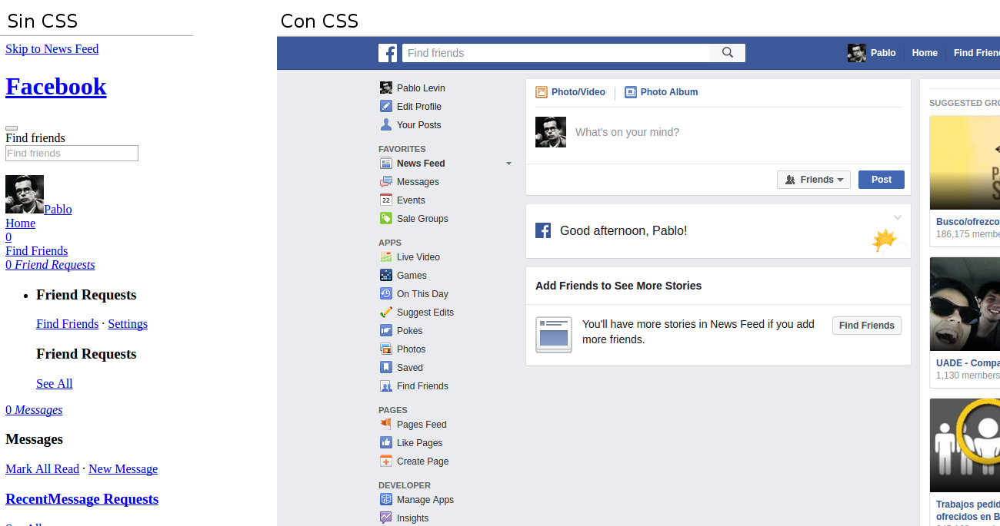BROWSER
Tanto HTML como CSS son reproducidos por el navegador, por lo que no necesitamos levantar ningun tipo de servidor para poder trabajar con ellos.
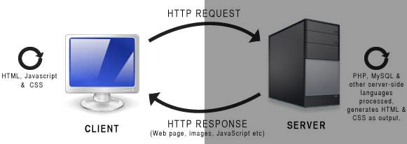DOM (Document Object Model)
Provee una representación estructural del documento y define una forma de accederlo y modificar la estructura, contenido y estilos del documento, esencialmente conecta la página web con scripts o lenguajes de programación

Partes de un Tag HTML
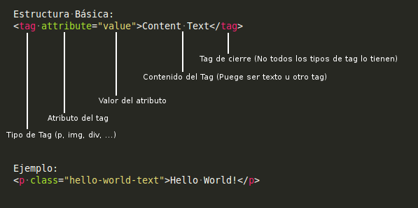Escenario Básico
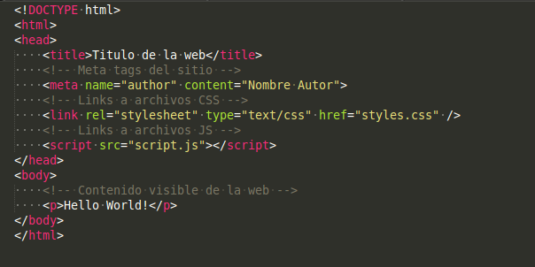Conexión HTML-CSS
Inline
Usando el atributo style dentro del tag. En este caso todo los estilos CSS son escritos dentro de este atributo. Esta forma de asignar estilos es considerada una mala práctica
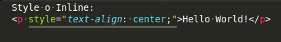ID
Se asocia el elemento con un id único para ese tag. Luego se definen los estilos que van a estar asociados a ese id
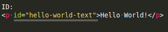Class
Es muy parecido al id solo que en este caso se útiliza el atributo class. Esta clase puede ser reutilizada las veces que se quiera en distintos elementos HTML
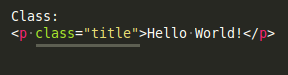Tag style
Dentro de este tag se podrá escribir código CSS que será interpretado por el navegador para darle estilos a los tags HTML que contengan las clases o ids especificados. La utilización de tags style es considerada una mala práctica
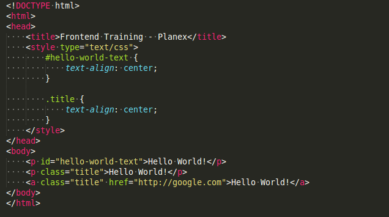Tag link
El tag link nos permitirá importar archivos css externos, pudiendo tener por separado el CSS del HTML. Este buena práctica reemplazaría al tag style
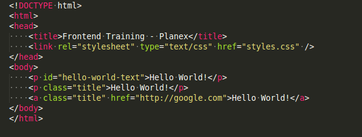 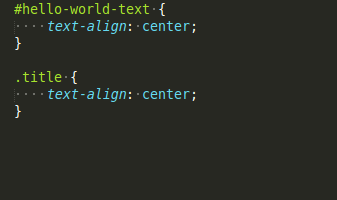Multiples Classes
El atributo class puede contener multiples clases, procesando las propiedades de ambas
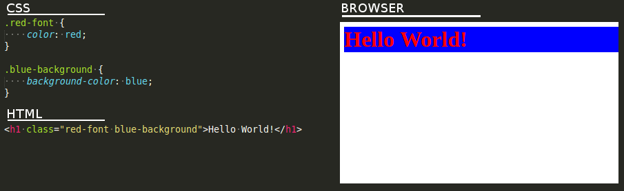